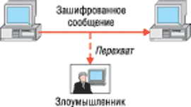
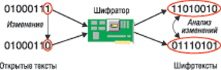
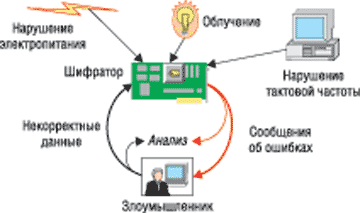

Сергей Панасенко,
начальник отдела разработки ПО фирмы "Анкад", к. т. н.
develop@ancud.ru
Можно ли считать зашифрованные данные
надежно скрытыми от чужих глаз?
Не совсем - то, что спрятал один человек,
всегда может попытаться найти другой...
Продолжая тему шифрования, начатую в статьях "Современные алгоритмы шифрования" ("BYTE/Россия" No 8'2003) и "Принципы использования ключей шифрования" ("BYTE/Россия" No 9'2003), оценим, какова же стойкость алгоритмов шифрования к разнообразным криптоаналитическим действиям злоумышленника, направленным на их вскрытие. Соответствующая характеристика алгоритма шифрования так и называется - криптостойкость. Обычно она оценивается временем, которое необходимо для вскрытия криптоалгоритма при условии наличия у злоумышленника неких фиксированных ресурсов.
Например, если арсенал этого злоумышленника составляет миллион процессоров, каждый из которых способен перебрать миллион ключей алгоритма DES в секунду, то на полный перебор всех вариантов 56-разрядного ключа DES уйдет 20 ч. Вывод: криптостойкости алгоритма DES недостаточно для защиты долговременных данных, но он вполне подходит для шифрования срочной информации, раскрытие которой через 20 ч не представляет опасности.
Цели атак
Атакуя алгоритм шифрования, злоумышленник обычно преследует две основные цели: найти секретный ключ или отыскать открытый текст, соответствующий зашифрованному.
Имея секретный ключ, он может читать все зашифрованные на нем сообщения, что несравнимо опаснее, чем расшифровка одного сообщения. Успешное получение злоумышленником секретного ключа обычно называется полным раскрытием алгоритма шифрования.
Однако часто "враг" ставит перед собой цель вычислить не сам секретный ключ, а ключ, эквивалентный секретному, - так называются ключи, которые отличаются от секретного, но дают тот же результат шифрования, что и уникальный секретный ключ. Если такой эквивалентный ключ успешно найден, злоумышленнику уже не нужен настоящий секретный ключ - он расшифрует все, что ему потребуется, с помощью эквивалентного. Сильные алгоритмы шифрования должны быть разработаны так, чтобы для них не существовало эквивалентных ключей.
Стоит сказать и о том, что для достижения перечисленных выше целей необходимы определенные ресурсы. Если "мощностей" у злоумышленника недостаточно, то он может попытаться выполнить так называемое частичное раскрытие секретного ключа или открытого сообщения. Частичное раскрытие секретного ключа способно помочь в полном раскрытии, например, значительно сузив область перебора секретных ключей.
Типы атак
В зависимости от имеющейся у хакера информации об алгоритме шифрования и возможностей получения такой информации различают шесть типов атак на алгоритмы шифрования (см. врезку).
Наиболее распространенный тип - атака при наличии известного шифртекста (рис. 1). Она используется в случае перехвата некой зашифрованной информации, которую нужно расшифровать. При этом чаще всего в общих чертах известно, какого рода сообщение передается в зашифрованном виде. Иногда известен и алгоритм, которым зашифровано данное сообщение.
|  | Рис. 1. Атака при наличии известного шифртекста.
|
Ясно, что в сравнении с другими перечисленными типами атака с известным шифртекстом наиболее сложна. Дело в том, что, если использован достаточно сильный алгоритм шифрования, для его полного раскрытия одних только шифртекстов, скорее всего, просто не хватит.
Однако намного интереснее типы атак, где цель злоумышленника - нахождение секретного ключа. Чаще всего речь идет об атаке на некоторое устройство шифрования, где "прошит" секретный ключ. В этом случае хакер пытается, подавая на вход данного устройства различные открытые и/или зашифрованные тексты, определить значение находящегося внутри секретного ключа.
Этот тип атак используется значительно реже, чем атака с известным шифртекстом. Тем не менее современные алгоритмы шифрования (и устройства, в которых они реализованы) должны быть готовы к подобным атакам.
Очевидно, что криптостойкость алгоритма напрямую зависит от типа атаки, т. е. на время полного раскрытия алгоритма влияют не только "мощности и ресурсы" злоумышленника, но и наличие у "врага" той или иной информации, относящейся к алгоритму и/или искомому секретному ключу.
Типы атак на алгоритмы шифрования1. Атака с известным шифртекстом. Злоумышленник имеет лишь набор зашифрованных данных, алгоритм сообщений и, возможно, некоторые данные об их открытом содержании.2. Атака с известным открытым текстом. У злоумышленника имеется набор пар "открытый текст - зашифрованный текст". 3. Атака с выбором открытого текста. Злоумышленник может выбирать определенные открытые тексты и получать соответствующие им зашифрованные (рис. 2).
4. Адаптивная атака с выбором открытого текста. Многократно
повторяемая атака с выбором открытого текста по следующему сценарию: выбор
открытого текста - его шифрование - анализ результатов - выбор следующего
открытого текста и т. д. |
Приемы и методы
Нападению могут подвергаться как сами алгоритмы (в этом случае используются их особенности), так и реализации алгоритмов в конкретных шифраторах.
Наиболее известный прием атаки носит название метод грубой силы. Суть его - в простом переборе всех возможных вариантов ключей шифрования алгоритма. Следовательно, чтобы исключить появление условий для такой атаки, алгоритм шифрования должен только иметь достаточно длинный ключ. Именно поэтому одно из главных требований при разработке современных алгоритмов симметричного шифрования - размер ключа не менее 128 бит. Считается, что такой длины ключа (при сегодняшнем состоянии вычислительной техники и с учетом ее развития) должно заведомо хватить на десятки лет вперед. Впрочем, разработчики алгоритма DES в 1977 г. также считали достаточным его 56-разрядный ключ...
При этом следует подчеркнуть: алгоритм шифрования считается идеальным в том случае, если более быстрые варианты атак невозможны.
Ясно, что атака методом грубой силы гораздо более ресурсоемка по сравнению с атаками, использующими криптоаналитические методы. В настоящее время известно немалое количество криптоаналитических методов атак. Примерами могут служить линейный криптоанализ - поиск зависимостей между символами открытого текста и шифртекста, а также дифференциальный криптоанализ - поиск зависимостей между изменениями открытого текста и шифртекста (рис. 3). Эти методы атак существуют в различных вариантах и могут применяться как совместно, так и в комбинации с иными методами.
|  | Рис. 3. Дифференциальный криптоанализ.
|
С другой стороны, современные криптостойкие алгоритмы шифрования разрабатываются с учетом всех известных криптоаналитических атак. Так, на проходивших недавно конкурсах по выбору стандартов шифрования - в США это конкурс AES (Advanced Encryption Standard), в Евросоюзе - конкурс NESSIE (New European Schemes for Signatures, Integrity, and Encryption) - алгоритмы, претендующие на роль стандарта, анализировались на стойкость не только ко всем известным атакам, но и к потенциально возможным.
Атаки на реализации
Не стоит забывать о том, что алгоритмы шифрования - это не "эфемерно-теоретическая" субстанция, они создаются для конкретных целей и имеют некое материальное воплощение в виде компьютерной программы или аппаратного шифратора. Увы, и в том, и в другом случае у злоумышленника появляются дополнительные возможности для атак на алгоритм.
Дело в том, что любой шифратор в процессе своей работы дает возможность получить от него различную "побочную" информацию. Так, путем высокоточного замера времени выполнения различных криптографических операций и последующего анализа можно предположительно вычислить значения каких-либо фрагментов секретного ключа - этот способ называется атакой по времени исполнения.
Аналогичные данные изощренный хакер способен извлечь путем анализа высокоточных замеров мощности, потребляемой шифратором во время шифрования, - атака по потребляемой мощности. Кроме того, шифратор, как и любой другой электроприбор, выступает источником электромагнитного излучения, характеристики которого также позволяют получить определенную информацию.
И, наконец, поскольку в процессе шифрования иногда случаются различные нештатные ситуации (простейший вариант - попытка расшифровывания на неверном секретном ключе), шифратор должен выдавать управляющему устройству (например, компьютеру, в который он установлен) статус ошибки. Одновременно со статусом передается и дополнительная информация, которая может стать источником полезных злоумышленнику данных.
"Снятие" упомянутой выше побочной информации - операция весьма трудоемкая, требующая специального оборудования для высокоточных замеров (исключение - данные об ошибках). А полученные результаты могут оказаться разочарующе ничтожными по содержательности. Поэтому такие атаки чаще всего организуются с целью сузить область поисков секретного ключа с помощью других криптоаналитических атак.
При описанных выше типах атак злоумышленник обычно только "прослушивает" побочные каналы информации. Более опасный вариант - активное воздействие на шифратор для получения дополнительной побочной информации. Возможны следующие способы воздействия на шифратор:
- подача на вход питания напряжения, существенно большего, чем расчетное, - пиковая атака;
- изменение тактовой частоты шифратора при использовании внешней управляющей синхронизации;
- облучение шифратора точно наведенным пучком света - оптическая атака;
- подача на вход шифратора специально подобранных неверных данных для расшифровывания.
В результате подобных воздействий злоумышленнику удается получить существенно больший объем побочной информации, чем при пассивном прослушивании. Ясно, что шифратор, работающий в нештатных режимах, будет значительно чаще выдавать сообщения об ошибках, в том числе, возможно, и необходимую злоумышленнику информацию (рис. 4).
|  | Рис. 4. Активное воздействие на шифратор.
|
Очевидно, что полностью исключить такие побочные источники информации не удастся, но минимизировать их - вполне возможно. При этом реально проводить обработку ошибочных ситуаций таким образом, чтобы не дать "врагу" возможности получить какую-либо дополнительную информацию. Поэтому при разработке качественных шифраторов должны учитываться возможные активные действия злоумышленника по "выбиванию" значения секретного ключа из шифратора.
Сертификация - не роскошь, а гарантия качества
Как следует из изложенного выше, надежность шифрования информации зависит не только от стойкости и силы использованного алгоритма, но и от того, насколько качественно разработан шифратор, который, собственно, и выполняет шифрование. Не случайно в большинстве развитых стран мира законодательно закреплены процедуры сертификации программных и аппаратных шифраторов для применения в государственных организациях. Россия здесь не исключение - отечественные государственные организации (да и ряд коммерческих тоже) обязаны использовать шифраторы, имеющие сертификат ФСБ России.
Такие процедуры сертификации позволяют проверить корректность реализации алгоритмов шифрования, безопасность процессов генерации, передачи, хранения и использования секретных ключей шифрования (см. "Принципы использования ключей шифрования", "BYTE/Россия" № 9'2003). Потребителю они дают возможность убедиться, что при правильном использовании шифратора злоумышленнику не удастся раскрыть секретный ключ и прочесть важное сообщение, независимо от мощности и уровня имеющихся у того технических ресурсов.